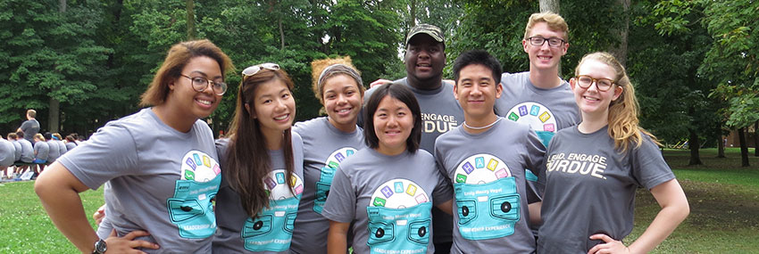
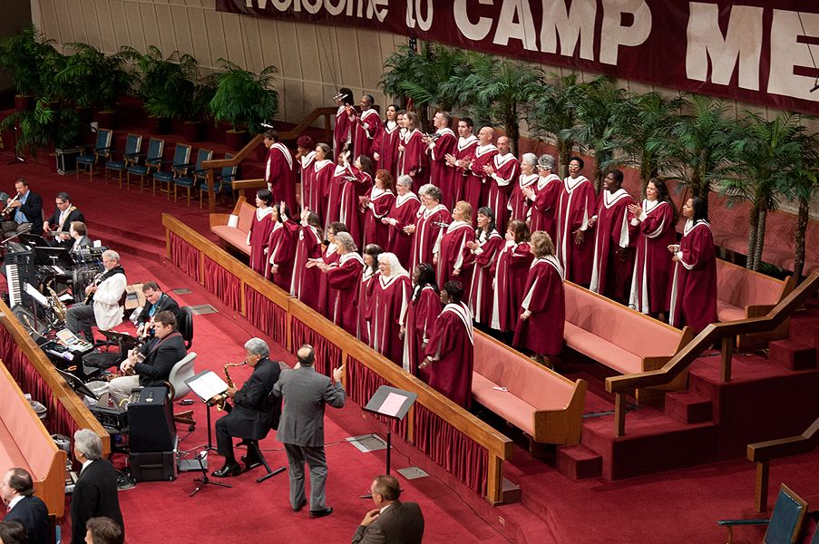

Clubs and Societies
Penn State students are also able to engage in different clubs and societies.Our clubs are very active and most of our students are able to gain many skills and exchange ideas through them.They do vary depending on the interest of the student.
They include;
Innovation club, Nature club, Redcross club, Science club, Journalism club, Beauty Community and many more.

Student Leadership
Secondly, We also have student leadership i.e School President and his team which leads the activities of all the students.
Religion
There are the worship centers in which, christians and muslims are able to conduct their religion.
These centers are very important in order to enable spiritual growth among them and mould their behaviours to make important people in the future.

Games
Our school is located on a 330 acres land and thus we have very big area left aside for games.Every type of Game has it's own field thus a room for talent and exercise exploitation.